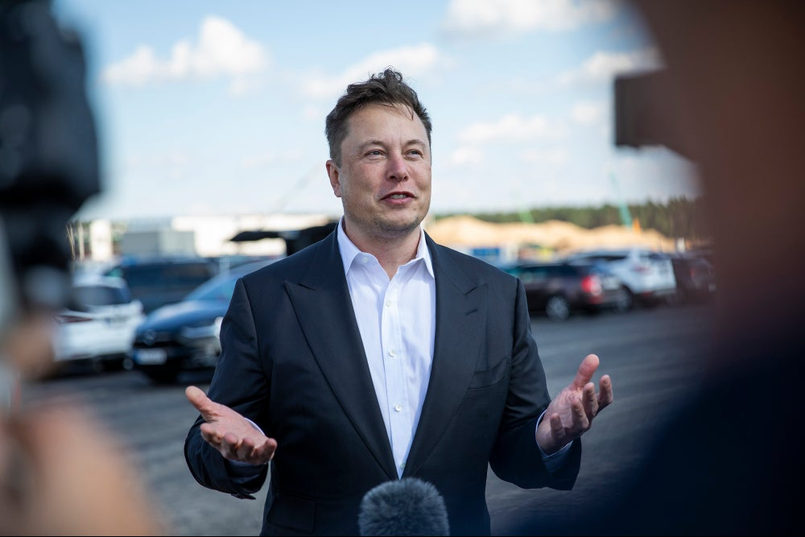

Ellon Musk

Fotografia do Ellon Musk durante conversa com jornalistas.
Ellon Musk é um cara muito conceituado na mídia devido a ser um forte expoente na tecnologia e também no meio social, com suas atividades profissionais e sociais.
Musk nasceu na África e muito novo começou a programar, logo ganhou seus primeiros dólares ao vender um joguinho que produziu em seu computador.
Atualmente, Ellon Musk é proprietário de uma série de empresas de capital multi bilionário, entre elas a Tesla Motors e a SpaceX, são as duas mais conhecidas. Contudo há também outras empresas como:
- NeuraLink
- The Boring Company
- SolarCity
- Open AI
Para saber mais sobre o Ellon Musk, visite sua página na Wikipédia.